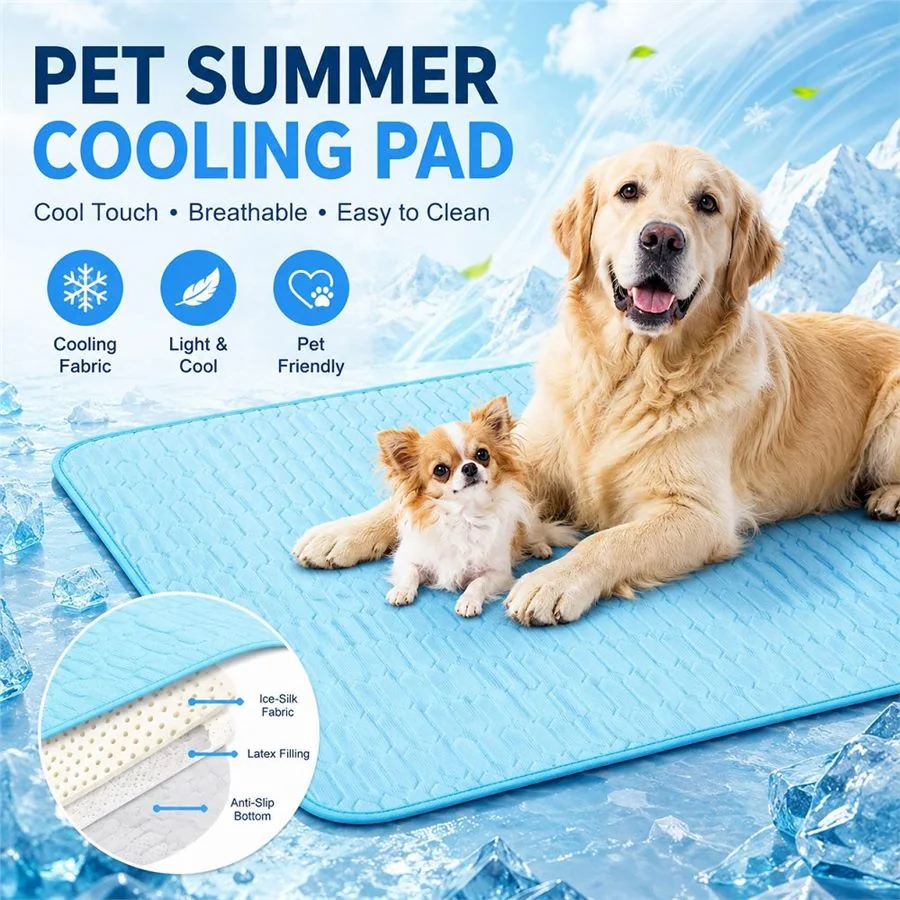

Pet Summer Cooling Pad
A breathable, three-layer cooling pad with soft support and secure grip for everyday summer comfort.

Product Highlights
- Three-layer construction with ice-silk fabric, latex filling and anti-slip bottom.
- Cool-touch feel with breathable, soft support.
- Easy-to-clean option for daily indoor pet use.
- Suitable for cats, puppies and medium to large dogs.